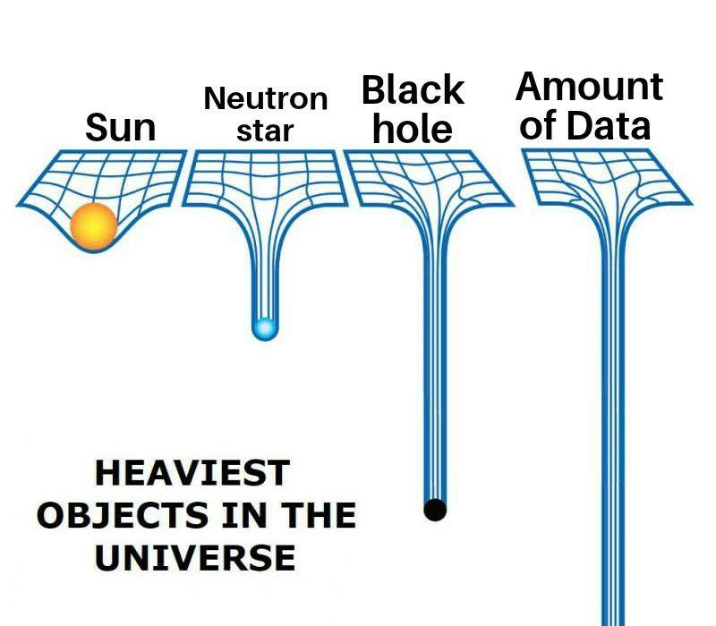

Insights to FOSS
the true objective behind FOSS
Created by FOSS Cell MEC
Themes
Before we get started whynot use choose a colour scheme.(P.S Most Programmers like thier stuff dark)
Black (default) -
White -
League -
Sky -
Beige -
Simple
Serif -
Blood -
Night -
Moon -
Solarized
Can open source make things better for you?
of course, it can. Like reveal.js made this presentation easier for us.
...and there's more
Freedom
You can do whatever you want on things open source.
You can mess it up, make it look like you made it, give it to your friends, and say "I MADE THIS"
apart from having fun...
- Usually offered for free & don’t require you to pay for any additional copy you download unlike windows and mac operating systems.
- Can lengthen the life of old hardware and avoid the need to replace them.
- It has been estimated that open source software collectively saves business organisations $60 billion a year.
there's a gigantic community
Don't have any idea where to start? Messed something up? don't worry..
There's a huge community waiting to help you.

Made by skilled people
Open source softwares (and these communities) are made by lot of skilled people.
so, everything out there will be reliable and safe(not exactly)
- Developers prefer to work on open source products as they can be an outlet for their ideas and creativity.
- They won’t be confined by the rigid rules of the corporate world, and they’ll have the freedom to experiment and come up with high-quality programs.
- Students and other consumers get access to world-class and state-of-the-art software without having to pay too much or pay at all.
Enjoy free shopping?
Linux,unlike any other operating systems out there, you can use them the way you want. Give them the look and feel you want it to have. You get all the new updates and features for free.
Privacy like never before
You don't have to worry about a Linux operating systems spying on you (unless you want it to).Think Open Source Can't make your pockets full?
That is where you are wrong kiddo..
And that my friend is just the tip of the iceberg..
Heard of git?
Pretty Code
function linkify( selector ) {
if( supports3DTransforms ) {
var nodes = document.querySelectorAll( selector );
for( var i = 0, len = nodes.length; i < len; i++ ) {
var node = nodes[i];
if( !node.className ) {
node.className += ' roll';
}
}
}
}
Code syntax highlighting courtesy of highlight.js.
Marvelous List
- No order here
- Or here
- Or here
- Or here
Fantastic Ordered List
- One is smaller than...
- Two is smaller than...
- Three!
Tabular Tables
| Item | Value | Quantity |
|---|---|---|
| Apples | $1 | 7 |
| Lemonade | $2 | 18 |
| Bread | $3 | 2 |
Clever Quotes
These guys come in two forms, inline:
“The nice thing about standards is that there are so many to choose from”
and block:
“For years there has been a theory that millions of monkeys typing at random on millions of typewriters would reproduce the entire works of Shakespeare. The Internet has proven this theory to be untrue.”
Intergalactic Interconnections
You can link between slides internally, like this.
Speaker View
There's a speaker view. It includes a timer, preview of the upcoming slide as well as your speaker notes.
Press the S key to try it out.
Export to PDF
Presentations can be exported to PDF, here's an example:
Global State
Set data-state="something" on a slide and "something"
will be added as a class to the document element when the slide is open. This lets you
apply broader style changes, like switching the page background.
State Events
Additionally custom events can be triggered on a per slide basis by binding to the data-state name.
Reveal.addEventListener( 'customevent', function() {
console.log( '"customevent" has fired' );
} );
Take a Moment
Press B or . on your keyboard to pause the presentation. This is helpful when you're on stage and want to take distracting slides off the screen.
Much more
- Right-to-left support
- Extensive JavaScript API
- Auto-progression
- Parallax backgrounds
- Custom keyboard bindings